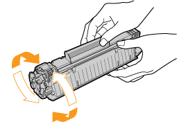
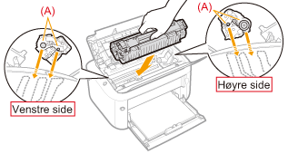

Når tonerkassetten nærmere seg slutten av levetiden, utfør følgende prosedyre før tonerkassetten byttes. Det kan være at du kan skrive ut en stund før toneren er helt oppbrukt.
|
Før du utfører følgende prosedyre, se "Merk (Tonerkassett)".
|
1
Hold i åpningen (A) på høyre side, og åpne toppdekslet.

2
Fjern tonerkassetten.

3
Rist tonerkassetten fem eller seks ganger som vist på figuren for å fordele toner jevnt inne i kassetten.

4
Installer tonerkassetten.
Press tonerkassetten skikkelig inn i skriveren til den berører baksiden av skriveren mens den justeres (A) på begge sider av tonerkassetten med lederne til tonerkassetten inni skriveren.

5
Lukk toppdekselet.
 Dersom du ikke kan lukke toppdekslet Dersom du ikke kan lukke toppdeksletSørg for at tonerkassetten er installert skikkelig i skriveren. Ikke prøv å lukke toppdekslet med makt, siden det kan skade skriveren.
|
|
Hvis hvite streker, ujevnheter eller nedtonet utskrift vises på utskriftene selv etter at du har utført prosedyren ovenfor, erstatter du tonerkassetten med en ny kassett.
 "Bytte av tonerkassetten" "Bytte av tonerkassetten" |